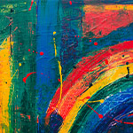
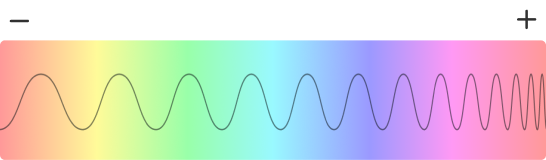
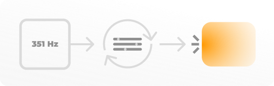

Crédits
© 2021 - Julien Scheen
Code
-
Détecter la collision d'éléments.
Pen de Dropinks - Copyright (c) 2021 by Dropinks (https://codepen.io/dropinks/pen/MrzPXB) Permission is hereby granted, free of charge, to any person obtaining a copy of this software and associated documentation files (the "Software"), to deal in the Software without restriction, including without limitation the rights to use, copy, modify, merge, publish, distribute, sublicense, and/or sell copies of the Software, and to permit persons to whom the Software is furnished to do so, subject to the following conditions: The above copyright notice and this permission notice shall be included in all copies or substantial portions of the Software. THE SOFTWARE IS PROVIDED "AS IS", WITHOUT WARRANTY OF ANY KIND, EXPRESS OR IMPLIED, INCLUDING BUT NOT LIMITED TO THE WARRANTIES OF MERCHANTABILITY, FITNESS FOR A PARTICULAR PURPOSE AND NONINFRINGEMENT. IN NO EVENT SHALL THE AUTHORS OR COPYRIGHT HOLDERS BE LIABLE FOR ANY CLAIM, DAMAGES OR OTHER LIABILITY, WHETHER IN AN ACTION OF CONTRACT, TORT OR OTHERWISE, ARISING FROM, OUT OF OR IN CONNECTION WITH THE SOFTWARE OR THE USE OR OTHER DEALINGS IN THE SOFTWARE.
-
Convertion des schéma de couleurs.
CSS TRICKS - Voir la licence
-
Réécriture complète du css d'un input range.
CSS TRICKS - Voir la licence
-
Générer un nombre aléatoire entre deux valeurs.
Gist de brunomonteiro3 - Modifications effectuées
-
"SmoothScroll" sur les ancres uniquement.
Réponse de Joseph Silber sur stackoverflow - Modifications effectuées - Voir la licence
-
Empêche la répétition de l'event "keyDown" lors d'un appuis prolongé.
Réponse de yckart sur stackoverflow - Modifications effectuées - Voir la licence
Éléments de design
-
Images
Pexel - Voir la licence
-
Icônes
Font Awesome - Voir la licence
Aide au dévellopement
-
Mes chers proffesseurs
M. Bourgaux, M. Marchal, M. Tournay, M. Thronte, M. Distefano, M. Hambersin
-
Trystan Lothaire
À donné le concept depuis lequel tout c'est contruit.
-
Daniel Depinholucas
Aide au dévellopement
-
Hanafi Younes
Présentation MVP de mon site
-
Deltour Tristan
Aide au dévellopement
-
Olivier Denis
Aide au dévellopement
Vu le contexte dans lequel nous nous trouvons, chaque échange que j'ai pu avoir m'a permis d'avancer un peu mieux, merci à tous !
Le son des couleurs
Pad
Piano
Appuyez sur une touche.
Le son des images
- 
En savoir plus
Comment ça marche ?
De votre point de vue, vous jouez avec trois sliders qui modifient une couleur et la fréquence sonore qui en sort.
Vous avez sans doute remarqué que plus la couleur est présente plus le son est jouée fort tandis que plus elle sera blanche, noir ou dé-saturée (moins la couleur est présente), moins le son sera audible.
Ces observation permettent déjà de comprendre que la luminosité et la saturation sont directement lié à l’intensité du son. La raison de ceci est tout d’abord que le blanc et le noir ne sont pas reconnu comme étant des couleurs. Plus encore, selon cette sources par exemple, dans le domaine musical, le blanc/noir sont lié à un vide ce qui accompagne à merveille mon raisonnement.
Démonstration de la fonction qui calcule le gain
Avec ces paramètres, nous arrivons à la première version de mon projet. Elle est intéressante mais semble incomplète n’est-ce pas ?
C’est parce qu’elle joue les fréquences des couleurs telle qu’elle sont présentée dans le spectre visible (de 428 Thz à 750 Thz), à cause de ça vous pourrez voir que nous avons aussi un seul rouge jouant deux sons différents (aux deux extrémités du slider de teinte). Cela ne semble pas fort logique étant donné que la première chose que l’on voit n’est pas une fréquence mais bien une couleur.
Pour améliorer ceci, le code ne crée désormais plus la fréquence depuis la teinte du schéma TSL (Teinte, Saturation, Luminiosité) mais bien depuis l’addition des couleurs rouge, vert et bleu du schéma RVB.
Pour obtenir ce schéma, je convertis la couleur fournie par le schéma TSL en couleur RVB à l’aide de cette fonction “TSLToRGB(t, s, l)”, et obtiens donc les valeurs “rouge”, “vert” et “bleu” avec lesquelles je peux jongler.
Démonstration de la fonction qui calcule la fréquence
De cette manière, je peux associer une gamme de fréquence à chaque valeur du schéma RVB pour créer non seulement un mélange de couleurs mais également un mélange de ces gammes ce qui résultera d’un son plus représentatif de chaque couleur (un bleu grave, un jeune aigu, etc,…).
Comment jouer les paramètres obtenu par ces méthodes ?
Pour jouer une fréquence avec la Web audio API, il faut créer un oscillateur et le démarrer. Une fois démarré, l’oscillateur prends trois principaux paramètres en compte: le type d’oscillateur, la fréquence, et le gain. Une fois que j’ai récupéré mon gain et ma fréquence avec les fonctions vue ci-dessus, comme ceci…
Je dois les assigner à mon oscillateur. Pour ce faire, la Web audio API met à disposition “setValueAtTime” et “setTargetAtTime”. “setTargetAtTime” est très utile pour le gain car il permet de gérer des fondus pour ainsi éviter de couper le son net. Avec ces deux outils, je demande donc ceci à mon code:
Le piano.
Si vous êtes sur la version ordinateur du site et que vous avez fait le tour des onglets, après avoir lu ceci vous aurez compris qu’il s’agit généralement du même principe pour chaque page: récupérer une couleur, créer sa fréquence et son gain, jouer les paramètres. Cependant le piano, lui, sort du lot.
C’est le seul code auquel on donne d’abord une fréquence, et non une couleur. Cependant, le problème est que plusieurs fréquences correspondent à plusieurs couleurs et que même faire machine arrière pour calculer une couleur depuis la fréquence est alors impossible.
La solution, c’est donc de demander au code de trouver une couleur correspondant à la fréquence demandée par le piano, et d’ensuite l’afficher à l’écran !
Démonstration du fonctionnement du piano
Pour la suite.
Les prototypes pourraient être améliorés à certains niveaux. Certaines peronnes trouvent que tout ceci pourrait être utilisé chez les personnes aveugles, il serait même possible de créer, de mes propres moyens, un petit dispositif qui permettrait d'écouter par un simple contact avec une surface !
Tout ceci n’était que le résumé du résumé d’une explication raccourcie du fonctionnement de mon code, si vous voulez découvrir les recherches qui se cachent derrière, vous pouvez consulter le medium de mes recherches !
En savoir plus sur mes recherches.